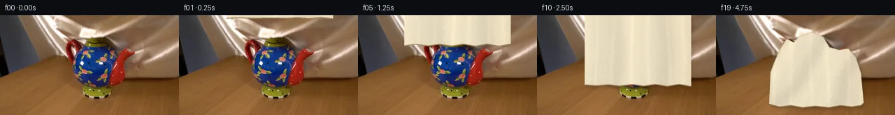

![首帧]()

Round 00
2026-11-05T08:32:27.491852+00:00像素候选变化代码 +194/−0inspection 更新
pixels 094f66f1cfa3bbdd · code 1153b3920a816203
查看本轮 generate.py 真实 diff
--- previous/generate.py
+++ current/generate.py
@@ -0,0 +1,194 @@
+from pathlib import Path
+
+import numpy as np
+from PIL import Image, ImageDraw, ImageFilter, ImageFont
+
+from artifact_io import save
+
+
+ROOT = Path(__file__).resolve().parent
+W, H = 256, 144
+SCALE = 4
+
+
+def smoothstep(value):
+ value = np.clip(value, 0.0, 1.0)
+ return value * value * (3.0 - 2.0 * value)
+
+
+def cloth_polygon(frame):
+ """Return cloth perimeter plus the free upper and lower edge polylines."""
+ if frame == 0:
+ return None, None, None
+
+ # A suspended square of silk moves down just in front of the pot.
+ bottoms = [0, 4, 12, 22, 33, 43, 54, 65, 77, 89, 101, 112, 122, 129, 132]
+ bottom = bottoms[min(frame, 14)]
+ top = bottom - 104
+
+ final_upper = np.array([
+ [78, 82], [84, 66], [92, 48], [101, 34], [111, 39],
+ [120, 30], [137, 24], [153, 31], [162, 46], [176, 50],
+ [189, 48], [200, 61], [207, 83],
+ ], dtype=np.float32)
+ panel_x = np.linspace(67, 219, len(final_upper), dtype=np.float32)
+ panel_upper = np.column_stack((panel_x, np.full_like(panel_x, top)))
+
+ # The release begins after the panel has covered the bulk of the teapot.
+ settle = smoothstep((frame - 10) / 4.0)
+ upper = panel_upper * (1.0 - settle) + final_upper * settle
+
+ # Gentle side-to-side air motion while falling, gone after contact.
+ sway = 1.5 * np.sin(frame * 0.72) * (1.0 - settle)
+ upper[:, 0] += sway
+
+ final_lower = np.array([
+ [211, 126], [207, 130], [194, 132], [178, 130], [161, 133],
+ [142, 131], [124, 133], [107, 130], [91, 132], [76, 128],
+ ], dtype=np.float32)
+ panel_lower_x = np.linspace(219, 67, len(final_lower), dtype=np.float32) + sway
+ # A shallow, fluttering free hem gives the moving cloth physical softness.
+ flutter = 1.6 * np.sin(panel_lower_x * 0.18 + frame * 0.62)
+ panel_lower = np.column_stack((panel_lower_x, bottom + flutter))
+ lower = panel_lower * (1.0 - settle) + final_lower * settle
+
+ polygon = np.vstack((upper, lower))
+ return polygon, upper, lower
+
+
+def rasterize_polygon(points):
+ mask = Image.new('L', (W * SCALE, H * SCALE), 0)
+ draw = ImageDraw.Draw(mask)
+ scaled = [(int(round(x * SCALE)), int(round(y * SCALE))) for x, y in points]
+ draw.polygon(scaled, fill=255)
+ return mask.resize((W, H), Image.Resampling.LANCZOS)
+
+
+def silk_rgb(frame, settle):
+ yy, xx = np.mgrid[0:H, 0:W].astype(np.float32)
+
+ # Long vertical folds while falling, then folds that fan out from the lid.
+ falling_phase = (xx - 69.0) / 11.7 + 0.14 * np.sin(yy / 15.0 + frame * 0.13)
+ fan_x = 137.0 + (xx - 137.0) * 80.0 / np.maximum(80.0, yy - 12.0)
+ draped_phase = (fan_x - 68.0) / 10.4 + 0.05 * yy
+ phase = falling_phase * (1.0 - settle) + draped_phase * settle
+
+ folds = 8.5 * np.cos(phase) + 3.5 * np.cos(phase * 2.17 + 0.8)
+ # A few narrow specular ribbons characteristic of silk.
+ ridges = np.zeros_like(xx)
+ centers = [84, 108, 136, 159, 188, 208]
+ for i, center in enumerate(centers):
+ center_shift = center + 2.0 * np.sin(yy / 31.0 + i + frame * 0.07)
+ ridges += 8.0 * np.exp(-((xx - center_shift) / (2.3 + (i % 2))) ** 2)
+
+ vertical_light = 5.0 * (1.0 - yy / H)
+ micro = 1.3 * np.sin(xx * 0.83 + yy * 0.37) + 0.8 * np.sin(xx * 0.21 - yy * 0.71)
+ lum = folds + ridges + vertical_light + micro
+
… diff truncated; 107 more lines …